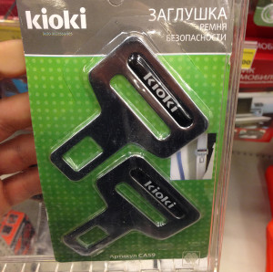

Вот уже около восьми лет я всегда пристёгиваюсь в машине ремнём безопасности. Причём я точно знаю, когда я начал это делать: я сидел на парковке на ФПК, прогревал машину, а по радио шла социальная реклама Bridgestone. В рекламе говорилось, что профессиональные пилоты Формулы-1 всегда пристёгиваются ремнём безопасности. Во мне что-то щёлкнуло, и я щёлкнул замком ремня.
С тех пор я пристёгиваюсь всегда. Делаю это абсолютно автоматически, не задумываясь. Мало того, если программа даст сбой, и я не пристегнусь, то чувствую себя неуютно, как известная субстанция в проруби. Прикольно ещё и то, что мой сын тоже пристёгивается на автомате даже в чужих машинах.
Не пристёгиваться ремнём в моём детстве было чуточку круто, всяким милиционерам даже разрешалось не делать этого совершенно официально. С удовольствием наблюдаю, что в последнее время ума у людей прибавляется, по крайней мере в этой части, и ремни используют как владельцы недорогих отечественных автомобилей, так и водители крутых чёрных джипов.
В то же время я абсолютно не понимаю какое отношение имеют ремни безопасности к правилам дорожного движения, (а их неиспользование является нарушением пункта 2.1.2 и наказывается сегодня штрафом в 1000 рублей). С той же логикой, на мой взгляд, можно наказывать людей, которые ходят под надписью «Осторожно, падение сосулек».
Сегодня в «Metro C&C» увидел в продаже специальные заглушки для замка ремня безопасности. Их покупают, чтобы умная техника не пищала, и не раздражала более умного автолюбителя.
Это как, если бы солдаты, в местах боевых действий, платили командиру за право использовать сложенные из газеты кепки вместо касок.

Есть мнение, что ремнём необязательно пристёгиваться, если передвигаешься просто «по городу».
Тут есть два момента.
— Люди переоценивают скорость своей реакции и дурость окружающих — если вы едете со скоростью 50 км/ч и сталкиваетесь с автомобилем, двигающимся с той скоростью, это всё равно, что на скорости 100 км/ч врезаться в бетонную стену (и вылететь через стекло).
— Подушка безопасности, сработавшая без ремня безопасности, даже на маленькой скорости может превратить ваше очаровательное лицо в лучшем случае в котлету.
Порой люди, садясь ко мне в машину, с удивлением наблюдают, как я пристёгиваюсь. И спрашивают: «А мне тоже нужно?». Я тогда говорю, что лобовое стекло им в случае чего придётся пробивать своей головой. Бывает, этот довод для людей не имеет значения. Поэтому приходится просить пристегнуться отдельно.